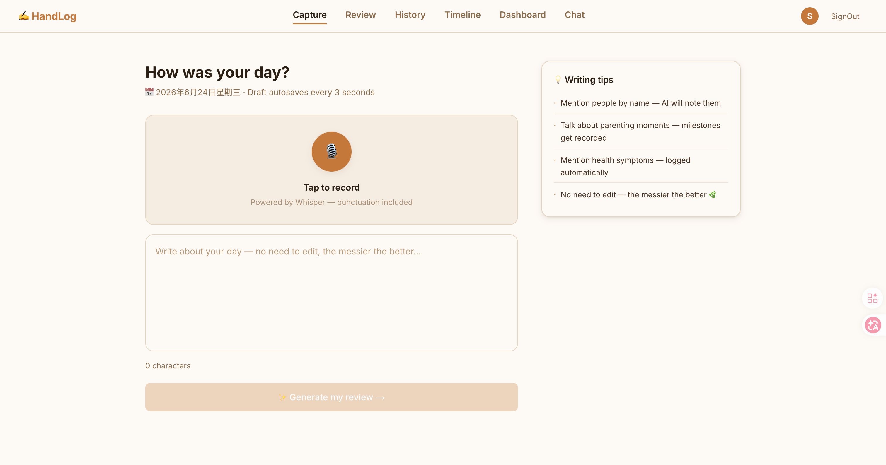
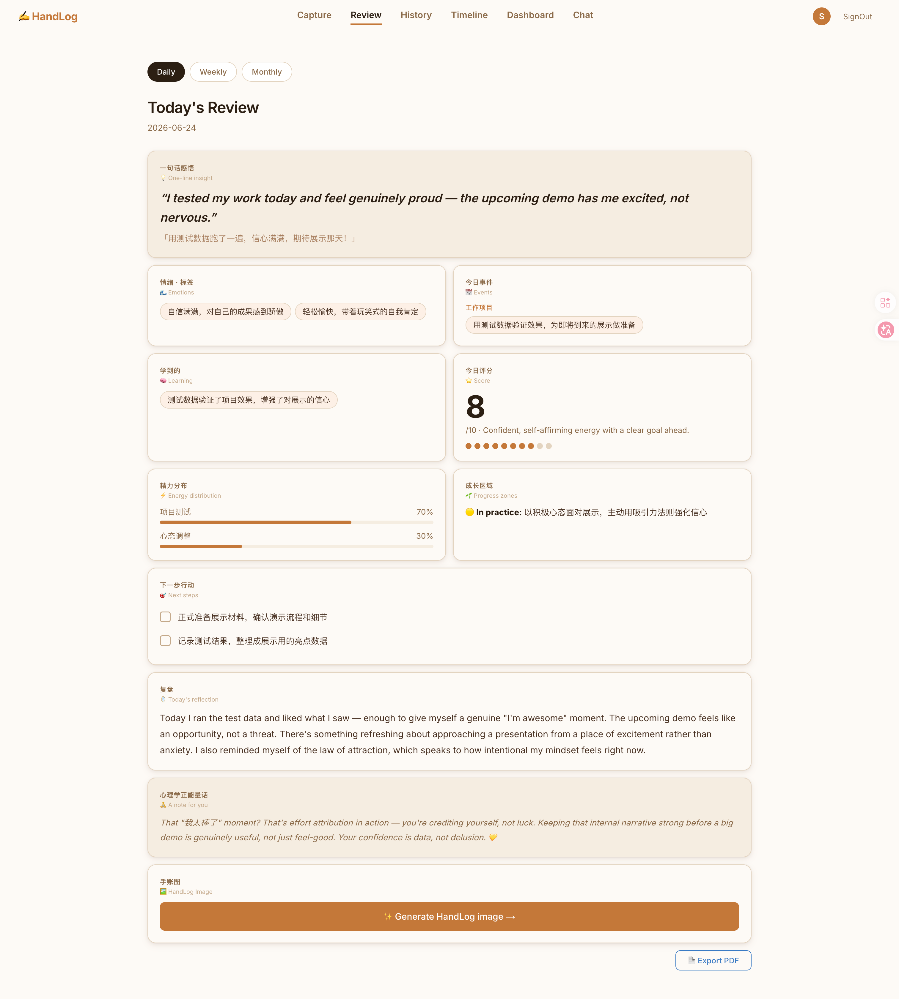
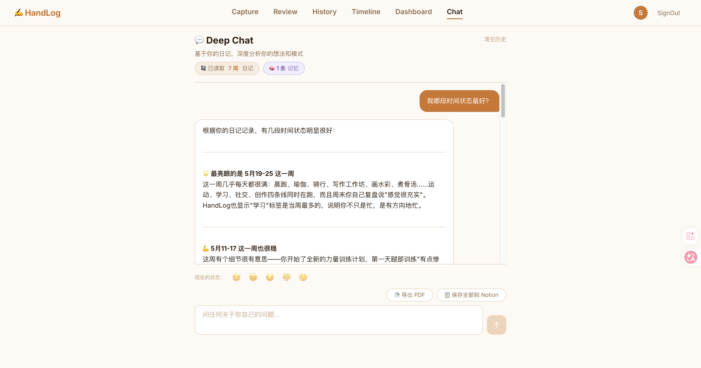
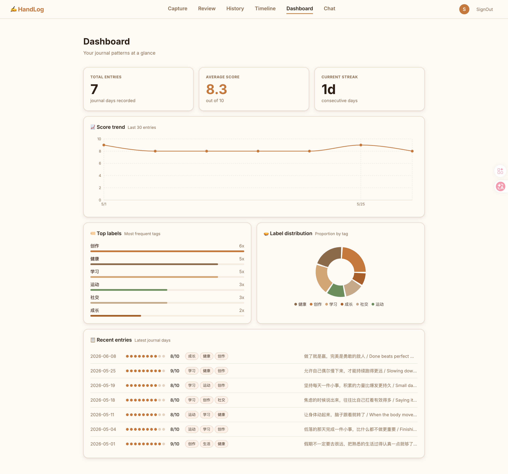
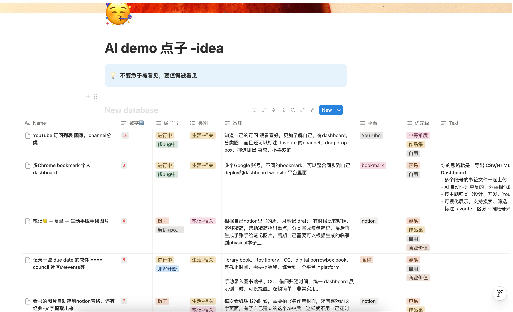
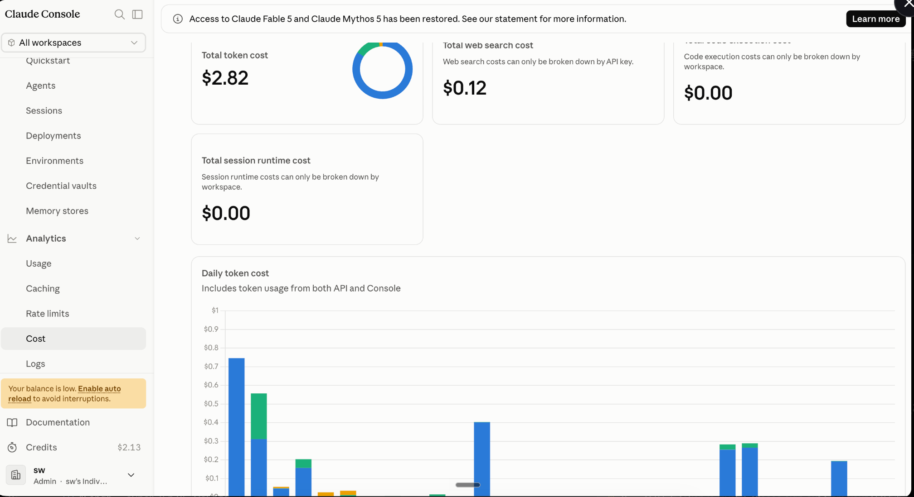
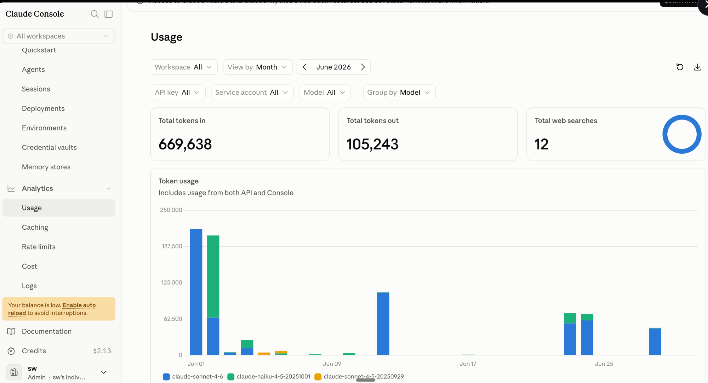

An AI journal that thinks with you —
capture your day by voice or text, get weekly reviews written back to you.
People who want to remember their lives.
Most journals
never get read
again.
We write, we forget. There's no structure, no reflection, no way to see the patterns in your own life — until now.
No structure
Free-form notes pile up with no summary, no themes, no meaningful takeaways.
Too much friction
Opening an app, typing a full entry — it feels like homework. Most people stop within a week.
No reflection
Without review, journaling is just venting. The growth comes from looking back — but nobody does.
Three steps.
Effortless habit.
Your life, visualised.
Everything you need,
nothing you don't.
Ask your AI
about your life.
Your journal knows you. Ask it anything — your AI has read every entry and can surface insights you never noticed yourself.
"What made me happy this month?"
It came back with three things I had completely forgotten.
Not productivity. Not habit tracking. Memory.
See it
working.
Every page has one job — capture, review, reflect, or explore. Daily, weekly & monthly reviews, all AI-generated.




Built in 7 days.
Shipped to the world.
Solo, from scratch. No prior AI experience — just Claude Code and curiosity. Generates daily, weekly, and monthly reviews automatically. The whole workflow runs on AI-first tools from day one.
Vibe code
your life.
You don't need to be a developer.
You just need a problem worth solving
and the curiosity to try.
I keep a Notion table of ideas — problems I notice in my daily life that don't have good solutions yet. When I have time, I pick one and vibe code it into existence.
"Done is better than perfect — progress comes from action."

Less than
a cup of coffee.
I topped up $5 on the Claude API.
A month of vibe coding a small project
barely made a dent.
(tokens + web search)
original $5 top-up
669,638 tokens in · 105,243 tokens out · 12 web searches — and I still have more than half my budget left.


Thank you for being here.
Try it yourself — it's free and open source.
remembered.
Your memories, structured and searchable — forever.